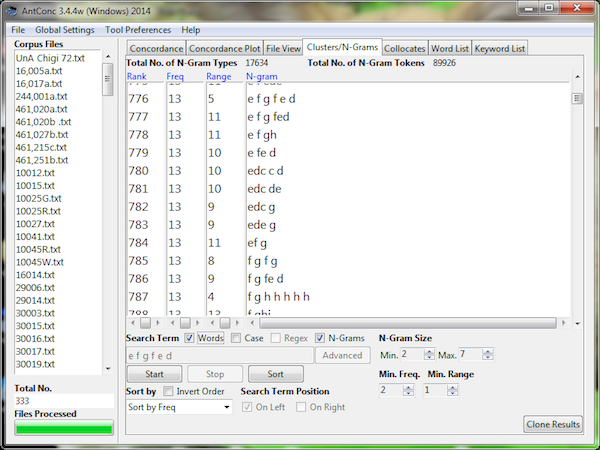
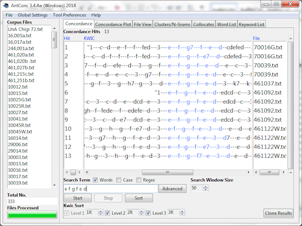
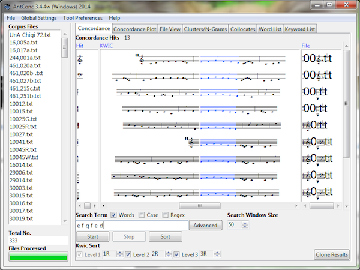
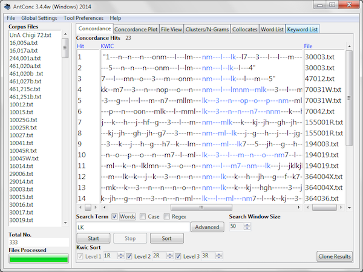
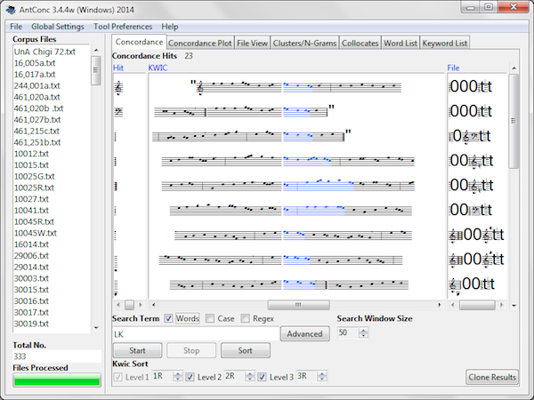
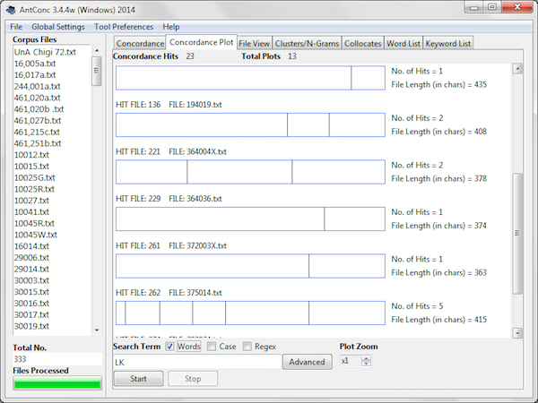

Troubadour Melodies Database
Posted by ehopkins on March 21, 2016
Today’s blog post features the Troubadour Melodies Database, a project developed by Katie Chapman that uses tools and resources developed through SIMSSA and the Cantus Ultimus project. Working with Jan Koláček, one of our international SIMSSA collaborators, she has developed a fully searchable online database of troubadour melodies encoded in the Volpiano font. Katie is currently a PhD candidate in Musicology at Indiana University. Originally from Rock Hill, South Carolina, she also studied Music Theory and History at Furman University (Greenville, SC) and performed on bassoon and contrabassoon.
Emily Hopkins: What inspired the creation of the database? Can you tell us more about how you are using the database in your dissertation research?
Katie Chapman: One of the first inspirations for the database came from Hans Tischler, who described the benefit of having a team bring together study of the different lyric traditions to me in January 2010 when I told him that I was interested in studying troubadour and trouvère song. Making the melodies digitally available and searchable was a first step in this process, so it was one I had in mind for a while before I found the encoding method and tools I needed to get started. Since the troubadour repertoire is fairly limited in size, I could transcribe it as part of my dissertation project to help look for any connections between melodies related to transmission or borrowing.
EH: How did you become connected with Jan Koláček?
KC: I came across his Global Chant database through the CANTUS database while working on my main doctoral exam topic (medieval monophony) and was very impressed with the melody search tool. Based on that, I knew the programming for my idea was already available; when I started working on the digital humanities part of my dissertation, I was able to get in touch with him about the project.
EH: How did you learn about the Volpiano font, and what made you decide to use it?
KC: I first learned about Volpiano through CANTUS and the Global Chant database. The fast learning curve for transcription in this encoding method and the existing search tool designed by Jan made it a great option for getting the repertoire into a fully searchable format in a fairly short time frame (about nine months for the bulk of transcription and the site design and launch).
A screenshot of the melody search on the Global Chant Database. Try it yourself!
EH: What other uses do you imagine for the database?
KC: One of my goals for this project is to use it to work out a model for databases for the other vernacular monophonic repertoires so we will eventually be able to not only search within each individual tradition, but also to connect the databases to run searches across the different traditions. (The same long term goal as several other scholars as well.) My first project after my dissertation will be to move work forward on the trouvère database as a collaborative encoding project.
EH: Did you have any prior programming/database experience? Did you have to acquire any new technical skills for this project, or were existing technical skills an important asset? More generally, do you think technical/programming skills are becoming more important for musicologists, at least in some areas?
KC: I had zero programming experience before I took a few introductory workshops offered through my university in January-March 2015. I had never worked with Drupal until I started working on the site last June, and the Beta version went live in October. Most of what I have learned has come from working on the site and consulting with Jan and the Digital Humanities staff at Inidiana. With the tools and platforms available at this point, a lot of aspects of website and database design are more user-friendly for the beginner, depending on the type of programming needed. There is a lot of documentation aimed at a wide range of skill levels to help with the different projects musicologists are increasingly venturing into, from mapping to TEI to databases. The increasing ease of access to open-source platforms and inexpensive server storage and site hosting means that musicologists can more easily develop digital humanities projects (and thus need these technical skills more) as we design projects that let us connect with the work of other scholars, other archives, other repertoires, and work with musical characteristics and sources in a variety of different ways.
EH: Tell me more about your new project involving text analysis approaches and Volpiano.
KC: I recently started using statistical analysis software to analyze troubadour poems for part of my dissertation; it occurred to me that the same text mining programs should be able to analyze Volpiano-encoded melodies since they are text strings (with two adjustments to the encoding system). I started applying the text analysis program AntConc to the repertoire, using versions of the melodies without accidentals or plicas as a starting point to see what the software could do. AntConc can auto-generate a Word-list (in this case, every unique note or note-group in the repertoire) The program can also find patterns in the melodies based on set parameters for pattern length and the minimum number of melodies that have the pattern automatically (called N-grams, or expressions). The following image is an excerpt of the results for note patterns from 2-7 notes or note-groups in length. Freq(uency) is the number of total appearances; Range is the number of different melodies the pattern appears in.

Results can be sorted by frequency or starting pitch. (The program can be set to show results in Volpiano, but then the file names also view in notation). The program shows each result in the concordance for each pattern. The following images show the same concordance results displayed as text and below as Volpiano for E-F-G-F-E-D appearing as a pattern of single pitches (The catalog number is given in the file name):


The program also finds collocates within parameters you set (appearances of notes or note-groups within a certain distance from each other but non-sequentially). For example, you can tell it to find every time a particular note group has another one appear within five notes of it, like every time F-E (in the Volpiano alphabet, N-M) appears within five notes of D-C (Volpiano L-K), regardless of the order of note groups within that set of five. Below is the text representation, followed by Volpiano.


AntConc allows you to see each appearance of a given pattern (analogous to a word in actual text analysis) in the distribution plots showing placement within each melody. Below is the distribution plots for D-C (L-K) over six different pieces.

Thank you Katie for sharing your research with us!